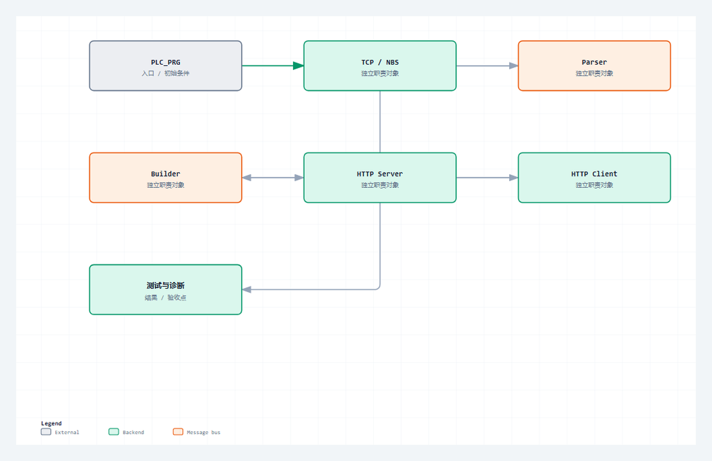

HTTP 语法只是入口。真正的 PLC 实现还要解决周期调用、固定内存、连接生命周期、角色分层、错误诊断和可验证边界。
适合谁收藏
- 第一次系统理解 HTTP 的 PLC 工程师。
- 已经会调用通信功能块，但分不清 TCP 连通与 HTTP 完整事务的人。
- 需要建立后续 Server、Client 学习坐标的读者。
基础认知，第 4/4 篇；主系列第 04/28 篇。
现场问题
桌面程序可以等待网络调用返回，PLC 程序却要在有限扫描时间内持续执行其他控制逻辑。Connect、Write、Read 和 Close 都可能跨周期完成，任何一个阻塞式等待或无上限字符串都会破坏可预测性。
因此，PLC HTTP 协议栈不是把报文解析代码放进一个 FB 就结束，而是把连接、消息、事务和业务拆成可以周期推进的对象。
先给结论
可靠的 PLC HTTP 架构应沿着“TCP/NBS -> 协议内核 -> Server/Client 状态机 -> 应用层”分层。每层拥有自己的状态、资源上限和错误证据；共享 Parser 与 Builder，但不共享连接句柄和事务状态。

读图重点
这张图只压缩本篇的判断路径。读图时先找“TCP / NBS”对应的输入边界，再沿着“读取或修改业务对象”检查状态怎样推进，最后用“只消费完整请求或响应”确认输出是否已经形成验收证据。
把对象和边界分开
| 对象或阶段 | 工程职责 | 现场观察点 |
|---|---|---|
| TCP / NBS | Listen、Connect、Read、Write、Close | 句柄、ready、底层错误 |
| HTTP 内核 | 解析、构造、chunked 解码 | 消息边界和协议错误 |
| 角色状态机 | Server 接入 / Client 主动事务 | 状态、超时、连接策略 |
| PLC 应用 | 读取或修改业务对象 | 只消费完整请求或响应 |
为什么不能把所有代码写进一个功能块
如果监听、连接、解析、路由、构造和业务都挤在同一段 CASE 中，最先失去的是错误边界：一个连接的坏 Header 可能复位所有连接；Client 超时可能清掉 Server 缓冲；业务错误可能被包装成 TCP 错误。
当前工程按职责分层：
| 层级 | 主要对象 | 可独立回答的问题 |
|---|---|---|
| 传输层 | NBS TCP_Server、TCP_Client、Read、Write | 通道是否建立，字节是否移动 |
| 协议内核 | Parser、Builder、chunked decoder | 消息是否完整、语法是否合法 |
| 角色层 | FB_HttpServer、FB_HttpServerConnection、FB_HttpClient | 事务处于接入、收、发、完成还是故障 |
| 应用层 | /api/ping、/api/status 等路由 | 资源是否存在，业务是否允许执行 |
首版能力边界
- 支持明文 HTTP/1.1。
- 支持 Content-Length。
- 支持入站 chunked 解码，出站统一使用 Content-Length。
- 支持短连接和受控顺序 keep-alive。
- Server 使用固定连接槽，Client 每次只推进一笔事务。
- 不宣称支持 HTTPS/TLS、认证、HTTP/2、HTTP/3、pipeline 和通用连接池。
能力边界不是文章尾部的免责条款，而是设计输入。它决定缓冲区、状态机、测试矩阵和现场使用方式。
从协议约束到代码职责
协议约束
可靠的 PLC HTTP 架构应沿着“TCP/NBS -> 协议内核 -> Server/Client 状态机 -> 应用层”分层。每层拥有自己的状态、资源上限和错误证据；共享 Parser 与 Builder，但不共享连接句柄和事务状态。 这条结论先限定消息什么时候成立，再限定哪个角色可以消费结果。若绕过协议边界直接驱动业务，半包、超时、重复执行和连接残留就会进入应用层。
工程抽象
PLC_PRG 负责周期装配，不负责逐字节解析。Server 外层管理监听与连接槽，单连接对象管理一条连接上的收发；Client 管理主动请求事务。Parser、Builder 和 chunked 解码器是无网络职责的协议能力。
当前实现明确覆盖明文 HTTP/1.1、Content-Length、入站 chunked、短连接和受控顺序 keep-alive；HTTPS、认证、HTTP/2、pipeline 和通用连接池不在首版范围。把没有实现的能力写清楚，是工程可信度的一部分。
- TCP / NBS：工程职责是“Listen、Connect、Read、Write、Close”。它不能只停留在命名层面，运行时必须能通过“句柄、ready、底层错误”观察到输入、状态或结果；否则这一层即使有代码，也没有形成可验证边界。
- HTTP 内核：工程职责是“解析、构造、chunked 解码”。它不能只停留在命名层面，运行时必须能通过“消息边界和协议错误”观察到输入、状态或结果；否则这一层即使有代码，也没有形成可验证边界。
- 角色状态机：工程职责是“Server 接入 / Client 主动事务”。它不能只停留在命名层面，运行时必须能通过“状态、超时、连接策略”观察到输入、状态或结果；否则这一层即使有代码，也没有形成可验证边界。
- PLC 应用：工程职责是“读取或修改业务对象”。它不能只停留在命名层面，运行时必须能通过“只消费完整请求或响应”观察到输入、状态或结果；否则这一层即使有代码，也没有形成可验证边界。
程序单元
本篇主证据来自 PLC_PRG.st 中以 PROGRAM PLC_PRG 为定位点的连续源码。这里不是为了展示语法，而是把协议约束落到确定程序单元：输入先进入结构体或缓冲区，状态机只在本周期处理可确认的部分，长度和结束条件决定能否前进，错误码与指标负责把失败原因带出对象边界。这样一来，“周期执行模型必须进入协议栈架构。”可以在代码、在线变量和外部报文之间逐项对照，而不是依赖经验猜测。
本篇核心源码片段
下面两段代码来自同一个真实文件 PLC_PRG.st，以 PROGRAM PLC_PRG 为中心连续截取，没有改写变量、删除分支或用伪代码替代。第一段用于确认入口与前置条件，第二段用于确认状态、边界和输出。核对时重点看“Listen、Connect、Read、Write、Close”怎样进入对象，以及“只消费完整请求或响应”怎样证明本次处理已经结束。若两段之间的连续关系无法解释“支持范围和失败边界必须公开。”，就不能把局部代码截图当成实现证据。
片段一：入口、声明与前置条件
PROGRAM PLC_PRG
VAR
fbHttpClient : FB_HttpClient; // HTTP Client 主实例。
fbHttpServer : FB_HttpServer; // HTTP Server 主实例。
stClientMetrics : ST_HttpClientMetrics; // Client 指标输出。
stServerMetrics : ST_HttpServerMetrics; // Server 指标输出。
stClientResponse : ST_HttpResponse; // Client 响应输出。
aServerSnapshots : ARRAY[1..GVL_Http.cnMaxClientSlots] OF ST_HttpConnectionSnapshot; // Server 连接快照。
END_VAR
// === IMPLEMENTATION ===
/// =======================================================================
/// 名称 : PLC_PRG
/// 功能 : HTTP 示例工程主任务，直接完整调用 Client 和 Server 功能块。
/// 库依赖 : CAA Net Base Services
/// =======================================================================
/// 使用说明 : 1. Client/Server 所有真实网络命令默认关闭，由 GVL_HttpRealTest 在线变量触发。
/// : 2. 本主程序完整列出功能块引脚，便于 CODESYS/SmartControl 用户按引脚理解用法。
/// =======================================================================
// 工程说明：本段集中处理状态、边界或诊断，避免跨周期残留。
// 约束：PLC_PRG 作为示例主入口直接调用 HTTP 功能块；用户联调不再依赖辅助 PRG。
GVL_HttpRealTest.udiNowMs := GVL_HttpRealTest.udiNowMs + 10;
IF GVL_HttpRealTest.bResetResults THEN
fbHttpServer.M_Reset();
fbHttpClient.M_Reset();
GVL_HttpRealTest.bClientSend := FALSE;
GVL_HttpRealTest.bClientAbort := FALSE;
GVL_HttpRealTest.bServerPassLatched := FALSE;
GVL_HttpRealTest.bClientPassLatched := FALSE;
GVL_HttpRealTest.bOverallPassLatched := FALSE;
END_IF
fbHttpServer(
xEnable := GVL_HttpRealTest.bServerEnable,
xReset := GVL_HttpRealTest.bResetResults,
xCloseConnection := GVL_HttpRealTest.bServerCloseConnection,
bEnable := GVL_HttpRealTest.bServerEnable,
sBindIP := GVL_HttpRealTest.sServerBindIP,
uiPort := GVL_HttpRealTest.uiServerPort,
uiResponseStatusCode := GVL_HttpRealTest.uiServerResponseStatusCode,
sResponseBody := GVL_HttpRealTest.sServerResponseBody,
sResponseContentType := GVL_HttpRealTest.sServerResponseContentType,
sAdditionalHeader := GVL_HttpRealTest.sServerAdditionalHeader,
udiNowMs := GVL_HttpRealTest.udiNowMs,
xListening => GVL_HttpRealTest.bServerListening,
xRunning => GVL_HttpRealTest.bServerRunning,
xBusy => GVL_HttpRealTest.bServerBusy,
xError => GVL_HttpRealTest.bServerError,
bListening => GVL_HttpRealTest.bServerListening,
bRunning => GVL_HttpRealTest.bServerRunning,
bBusy => GVL_HttpRealTest.bServerBusy,这一段先回答对象在什么输入和状态下开始工作。阅读时要核对变量的初值、长度上限和启动条件，不能只看某个布尔量是否变成 TRUE。
片段二：状态推进、边界与输出
bError => GVL_HttpRealTest.bServerError,
diErrorID => GVL_HttpRealTest.diServerErrorID,
sDiagMsg => GVL_HttpRealTest.sServerDiagMsg,
eLastNbsError => GVL_HttpRealTest.eServerLastNbsError,
eState => GVL_HttpRealTest.eServerState,
eLastError => GVL_HttpRealTest.eServerLastError,
stMetrics => stServerMetrics,
uiActiveConnections => GVL_HttpRealTest.uiServerActiveConnections,
uiLastErrorSlot => GVL_HttpRealTest.uiServerLastErrorSlot,
uiLastRequestSlot => GVL_HttpRealTest.uiServerLastRequestSlot,
sRequestTarget => GVL_HttpRealTest.sServerLastTarget,
sRequestBody => GVL_HttpRealTest.sServerLastBody,
sRxMessage => GVL_HttpRealTest.sServerRxMessage,
sTxMessage => GVL_HttpRealTest.sServerTxMessage,
sLastTarget => GVL_HttpRealTest.sServerLastTarget,
sLastBody => GVL_HttpRealTest.sServerLastBody,
hListenHandle => GVL_HttpRealTest.hServerListenHandle,
aConnectionSnapshots => aServerSnapshots
);
fbHttpClient(
xEnable := GVL_HttpRealTest.bClientEnable,
xExecute := GVL_HttpRealTest.bClientSend,
xReset := GVL_HttpRealTest.bResetResults,
xAbort := GVL_HttpRealTest.bClientAbort,
xCloseConnection := GVL_HttpRealTest.bClientCloseConnection,
bEnable := GVL_HttpRealTest.bClientEnable,
bSend := GVL_HttpRealTest.bClientSend,
udiTimeOut := GVL_HttpRealTest.udiClientTimeoutUs,
sURL := GVL_HttpRealTest.sClientURL,
sServerIP := GVL_HttpRealTest.sClientServerIP,
uiPort := GVL_HttpRealTest.uiClientPort,
sHost := GVL_HttpRealTest.sClientHost,
sPath := GVL_HttpRealTest.sClientPath,
eRequestType := GVL_HttpRealTest.eClientMethod,
eMethod := GVL_HttpRealTest.eClientMethod,
sBody := GVL_HttpRealTest.sClientBody,
sContentType := GVL_HttpRealTest.sClientContentType,
sAdditionalHeader := GVL_HttpRealTest.sClientAdditionalHeader,
udiNowMs := GVL_HttpRealTest.udiNowMs,
xActive => GVL_HttpRealTest.bClientTcpConnected,
xConnected => GVL_HttpRealTest.bClientTcpConnected,
xBusy => GVL_HttpRealTest.bClientBusy,
xDone => GVL_HttpRealTest.bClientDone,
xError => GVL_HttpRealTest.bClientError,
bTcpConnected => GVL_HttpRealTest.bClientTcpConnected,
bBusy => GVL_HttpRealTest.bClientBusy,
bDone => GVL_HttpRealTest.bClientDone,
bError => GVL_HttpRealTest.bClientError,
diErrorID => GVL_HttpRealTest.diClientErrorID,
sDiagMsg => GVL_HttpRealTest.sClientDiagMsg,
eLastNbsError => GVL_HttpRealTest.eClientLastNbsError,第二段继续展示同一连续源码范围。把它与第一段合起来，才能判断输入怎样被锁存、状态何时推进、边界何时满足，以及错误出口是否保留了足够诊断信息。
验证路径
| 场景 | 操作 | 通过口径 |
|---|---|---|
| 周期调用 | 连续观察角色 FB 状态 | 每次扫描只推进有限步骤 |
| 资源边界 | 消息、Body、槽位达到上限 | 明确拒绝而不是截断 |
| 错误分层 | 分别制造 TCP、协议和业务错误 | 诊断能指出所属层 |
| 事务复位 | 完成或故障后再次执行 | 旧缓冲和旧错误不污染新请求 |
场景 1：周期调用
让测试端分两次发送同一条请求：第一次只发请求行和部分 Header，第二次隔几个扫描周期再发送剩余 Header 与 Body。PLC 第一次读取后应停在“继续接收”状态，业务输出不得变化；只有 Parser 确认整条消息完整后，路由和响应状态才允许前进。在线观察时同时记录任务周期、接收长度和角色状态，确认单次扫描没有等待网络数据返回。
场景 2：资源边界
分别构造接近上限和超过上限的 Header、Body，再并发占满全部连接槽。临界值以内的请求必须保持原文完成解析；超过上限的请求必须返回明确错误并关闭对应事务，不能静默截断。连接槽已满时，新连接只能被拒绝或等待，不能覆盖仍在处理的连接对象。
场景 3：错误分层
先连接一个未监听端口，确认错误来自 NBS/TCP；再发送缺失 Host 或 Content-Length 冲突的请求，确认错误来自 HTTP Parser；最后访问不存在的资源，确认 Server 返回 404 而底层连接仍可解释。三类故障必须落到不同状态、错误码或诊断文本，不能最终都只剩一个含义模糊的 bError。
场景 4：事务复位
先完成一笔正常事务，再制造一次超时或非法报文，随后立即发起新的正常请求。第三笔事务的接收长度应从零开始，旧状态码、旧 Body 和错误锁存不能进入新响应；完成脉冲只保持约定周期。若必须整体重启 PLC 才能恢复，说明连接释放或对象复位仍未收口。
常见误判
- 用阻塞式等待模拟桌面程序，忽略 PLC 扫描周期和任务时间。
- Server、Client、Parser 和业务共用状态与缓冲区，故障后只能整体复位。
- 把当前工程的容量和能力边界写成 HTTP 协议本身的限制。
这些误判的共同点，是拿一个局部现象替代完整事务。定位时必须回到本篇的输入、状态、边界和输出四个坐标，并用相同输入完成回归。
这一篇你最该记住
- 周期执行模型必须进入协议栈架构。
- 共享协议能力，不共享事务状态。
- 支持范围和失败边界必须公开。
系列导航
- 系列：CodeSys HTTP 系列教程，第 04/28 篇。
- 阶段：基础认知，职责线位置 4/4。
- 上一篇：第03篇
- 下一篇：第05篇
- 发布顺序：基础认知 -> Server -> Client -> 完整源码加更 -> 综合收束。
评论区预留
这里先保留评论和回复结构，不接入第三方服务。后续统一决定登录、匿名、审核、反垃圾和静态站兼容策略。